D2·05WebinarChallenge5 min
Approve Your Registration and Thank-You Pages
Why It Matters
Your registration and thank-you pages go live in your own Cloudflare account, and every sign-up lands in your CRM with its source attached.
Every channel you switch on sends people here; a weak page wastes each click, and an untagged form hides which channel worked.
How It Works
What the Agent Does
- Drafts every block from your offer, method, buyer and proof when you click Draft with AI.
- Creates your CRM database with the 11 pipeline stages and the five tags.
- Publishes the pages, form and scheduler, then opens the page as a visitor to confirm it is live.
- Refuses to publish while any answer still holds a [check] note or a placeholder.
What You Do
- Edit every line until it sounds like you and claims only what you can prove.
- Choose the two headline angles you will test against each other.
- Supply your privacy page, and decide whether the form asks for a LinkedIn profile.
Every Step
- The agent drafts both pages from your offer, method, buyer and proof. Edit anything.
- You A/B test the headline (benefit-led against problem-led), never a second, thinner page.
- Approve. The agent builds the pages, the form and your starter CRM in your Cloudflare account and gives you the link to check on a phone, a tablet and a laptop.
Step-by-Step Build
- The Live Webinar, in Approve Your Run of Show
- The Multi-Day Challenge, in Approve Your Run of Show
Done When
Your pages are live and a registration lands in your CRM.
S2: The Registration Page That Turns Visitors Into Sign-Ups
One page, the Tantra Funnel page: branded, proof-led, form above the fold. What you A/B test is the headline (benefit-led against problem-led), never a second, thinner page.
People obsess over the conversion rate and ignore form abandonment: the visitors who started typing and stopped. That number tells you something conversion rate can't: they wanted to, and something in the form stopped them. Usually it's a field you didn't need. Every field you remove is a measurable lift.
Two pages, generated from your Day 1 offer and persona:
- Tantra Funnel page: nine blocks, form above the fold at 1366×768.
- Thank-you page: this one earns its keep. It confirms, it adds to calendar, it asks them to join your community group (with a one-to-one WhatsApp chat as an option for personal confirmations and reminders), and it sets the expectation of what arrives next. A thank-you page that only says "thanks" is a wasted asset.
Then check every page at 375px, 768px and 1280px before you call it done.
- Webinar: PAR Page-to-Attendee Rate = attendees who signed up on the page ÷ page visits
- Reverse Squeeze Page: HWR Half-Watch Rate = people who watched more than half of the video on their first visit ÷ page visits
- Workshop Series: PDHR Page-to-Day-and-a-Half Rate = people who signed up on the page and attended 1.5 days or more ÷ page visits
S2 · Landing & Registration
The Tantra Funnel
Landing page, form, thank-you page, calendar file, tracking and CRM hand-off, with every automation.
The Full Setup
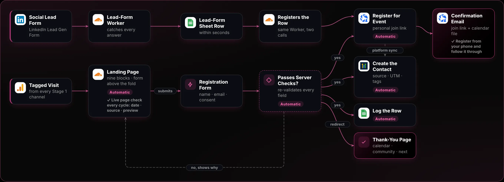
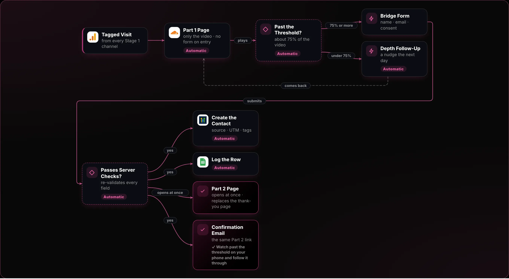
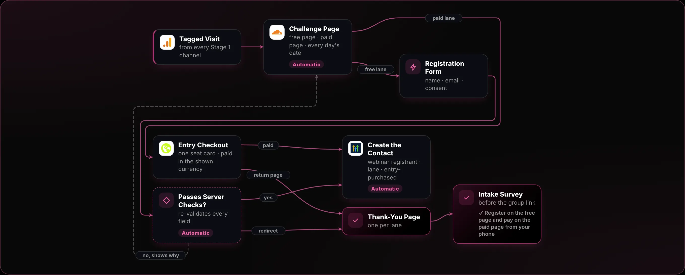
The Task
Turn a click into a registered attendee in your CRM, in one step, with nothing typed by hand. You'll set up the event, build a nine-block landing page with the form above the fold, handle the form on your server so it registers the person, creates the contact, adds a calendar hold and logs the row, then send them to a thank-you page that earns its keep. You're done when a registration made from your phone appears in your event platform and your CRM with its UTM intact, and the confirmation email with the calendar file arrives.
How This Changes by Mechanism
Webinar
The form is the conversion. The date block does the heavy lifting: the time in the visitor's time zone, an add-to-calendar button and a countdown. Get the time zone wrong and show-up drops for reasons you'll never find. The page hands straight to the event platform's registration: one list, one join link.
Reverse Squeeze Page (VSL)
There's no form on the entry page. The page is Part 1: the video above the fold, muted, with captions. The opt-in only appears once they've watched enough, as a bridge form built in the Stage 4 Reverse Squeeze guide (steps 4 to 6), and that opt-in is what earns the webinar registrant tag. The thank-you page is replaced by the Part 2 page, delivered in seconds. The server hand-off and CRM fields here stay the same.
Challenge
Two pages, two URLs: a free page with no price, and a paid page with one seat card that goes straight to checkout. Every day's date sits in the hero, with the real registration deadline. Thank-you page one is a short video and the intake survey before the group link; thank-you page two gives each day's logistics, then the optional upgrade with a real way to decline. Contacts get webinar registrant plus a lane field, and entry-purchased on payment.
Step by Step
-
Set Up the Event First
The Centre Does This
The centre creates and schedules the WebinarGeek broadcast and the account-wide webhook that reports registrations and attendance (the
event-setupjob). For Zoom it makes a Zoom Pro meeting with registration on instead.You Do This
Give the centre your WebinarGeek key and webinar ID (or Zoom app credentials), and confirm the date and time.
Building it by hand instead
In your event platform (WebinarGeek in this stack):
- Click + New webinar and choose Live. Write the title (a promise with a number in it) and the description.
- Under Date and time, add a broadcast: date, time and time zone.
- Set Estimated duration correctly. Every calendar entry and reminder is built from it, so a wrong duration makes every invite end at the wrong time. Left empty, it defaults to one hour.
- Decide the replay now, not after the event: Edit webinar → General → Dates and times → Replay → Settings, then set how long the replay stays available.
- Open Publish in the left sidebar and click Publish. The registration link is not active until you do.
- Copy the API key your page will use: Account → Integrations → API.
- Note the broadcast ID from the page address. Everything downstream keys on it.
Tip A broadcast's date can only be changed in the web screen, not through the API: Edit webinar, General, Date and time, Edit, Edit time, then Save. Re-open it to check, and tell the people who already registered.
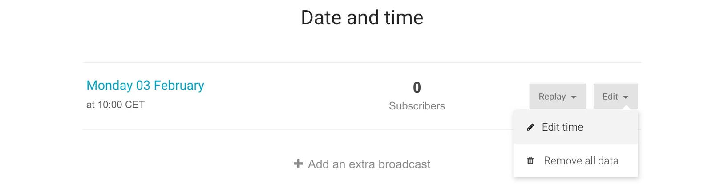
Each broadcast has its own date and time; change it only through Edit time, then re-check it. WebinarGeek Help Centre · Setting date and time · Captured 24 Sept 2026 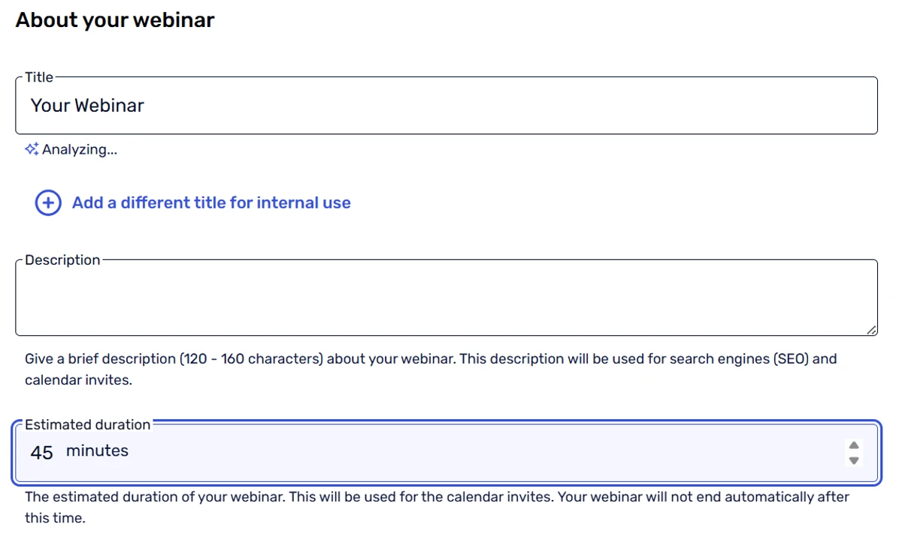
Estimated duration feeds every calendar invite, so set it to the real length. WebinarGeek Help Centre · Estimated duration of your webinar · Captured 24 Sept 2026 -
Build the Landing Page From One Spec
The Centre Does This
The centre deploys the funnel as a Cloudflare Worker with your approved copy, gives it a
workers.devaddress and checks the live page after it goes up (thedeploy-funneljob).You Do This
Approve the pages and the copy, and give the centre your Cloudflare token.
Building it by hand instead
Write one spec and have Claude Code build the page from it. The page has nine blocks, in this order:
- Logo and a trust strip
- Headline (the promise) and subhead (the mechanism in one line)
- A 60 to 90 second video, muted, with captions
- Three proof points: numbers, not adjectives
- The registration form
- Your mechanism, named, in 3 to 5 steps
- Testimonials, each answering one objection
- An FAQ that is your objection list, answered
- A call-to-action button that follows the reader down the page
To get set up:
- Install Claude Code. On macOS or Linux, open a terminal and run
curl -fsSL https://claude.ai/install.sh | bash. On Windows, open PowerShell and runirm https://claude.ai/install.ps1 | iex. - Run
claudeand log in when the browser opens. It needs a paid Claude plan (Pro, Max, Team or Enterprise) or a Console account. The free plan does not include it. - Once the page is live on its
workers.devaddress, add your domain. In the Cloudflare dashboard open Workers & Pages, pick the funnel Worker, then Settings → Domains & Routes → Add → Custom domain. Your domain already uses Cloudflare DNS (Day 0), so Cloudflare creates the record and the certificate itself.
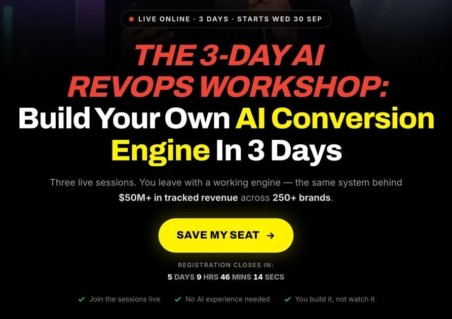
Our own funnel's hero: the promise, the mechanism in one line, one button and the countdown. The 3-Day AI RevOps Workshop · /workshop (this funnel, built as a Tantra Funnel) · Captured 24 Sept 2026 -
Put the Form Where Nobody Has to Look for It
The Centre Does This
The deployed page already carries the registration form. Each sign-up is saved with its UTMs, lane, time zone and consents.
Building it by hand instead
The form sits above the fold on a 1366×768 laptop, without scrolling, and again further down the page.
Ask only what you'll use: first name, last name, business email, and a profile link for follow-up. Ask for a phone number only if you will actually call or text.
Watch form abandonment: people who start typing and stop. It usually points to one field you didn't need.
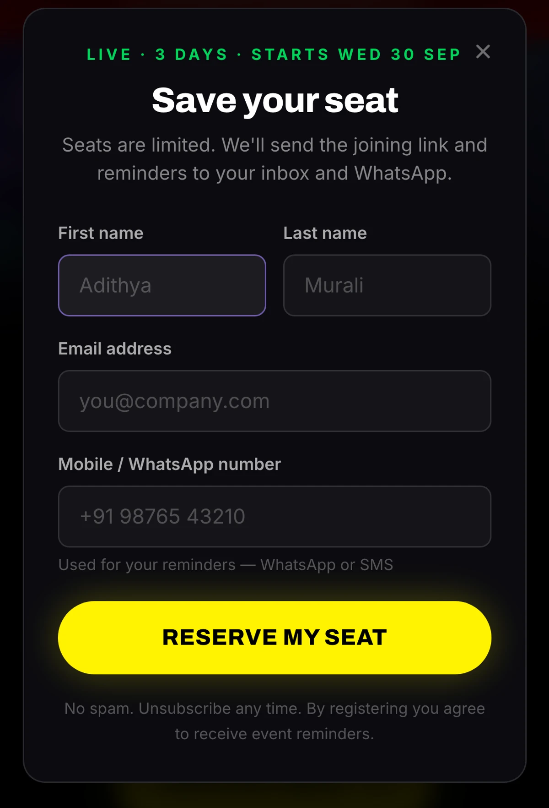
Four fields, one button, and a line saying what the number is used for. The 3-Day AI RevOps Workshop · /workshop registration form, 390px · Captured 24 Sept 2026 -
Handle the Form on Your Server
The Centre Does This
The funnel's own server handles every submit: it checks the origin, a hidden honeypot field, the email and a rate limit, saves the contact, tags it registered, registers it on WebinarGeek, sends the confirmation email at once and redirects to the thank-you page.
Building it by hand instead
Never send the form straight from the browser to your tools. Send it to your own small backend, which Claude Code builds for you. In order, it:
- Checks every field again on the server.
- Registers the person in your event platform and keeps the per-person join link it returns. Never use the webinar's generic join link: it is the same for everyone, and then nobody can tell who attended.
- Creates or updates the contact in your CRM, writing
readable_webinar_date,readable_webinar_time,watch_link_webinargeekandwebinar_broadcast_date. The reminders in Stage 3 are timed from that last field, so if it is empty no reminder ever fires. - Makes sure the calendar hold goes out. WebinarGeek's confirmation email carries the calendar invitation, so that is the hold. A separate write to Google Calendar needs Google Workspace domain-wide delegation, because a plain service account cannot invite guests. The Cold Calendar guide, steps 1 to 5, covers that setup.
- Logs the row in a sheet.
- Sends the browser to the thank-you page.
Your server writes the contact, so each submit is captured once and the redirect can't cut a write short. If you let GoHighLevel's form-tracking script capture the form in the browser instead, add two guards:
- One capture, not two. Make the button
type="button"and submit the form once from your script withrequestSubmit(), after the join link has come back. Atype="submit"button is captured twice, once on the click with the join link still empty, and the registrant gets two confirmations. The join link and date fields must be real text inputs parked off-screen, because the tracker skipstype="hidden". - Delay the redirect by 600 ms. Leaving the page at once cancels the tracker's request, and registrations go missing, most often on a phone on mobile data.
Create those four custom fields in the CRM (Settings → Custom Fields, type Text) before your first test submission. A value that arrives before its field exists is never mapped and never backfills, and every message that uses it renders blank.
Keep every key on the server. Nothing secret belongs in the page. The backend needs:
- WebinarGeek API key: the one from step 1. Do not send
skip_confirmation_mailwith the registration, or no confirmation email goes out. - GoHighLevel token: Settings → Private Integrations → Create new Integration. Name it, tick only the scopes the backend needs, and copy the token straight away. It is shown once.
- GoHighLevel fields: Settings → Custom Fields → Add Field. Create
utm_source,utm_medium,utm_campaign,utm_content,sourceandmechanismbefore the first test. - Sheet log: enable the Google Sheets API and share the sheet with the service account's email as Editor.
Save each key as a secret on the funnel Worker (the centre does this for the keys you connect on their cards):
- In the Cloudflare dashboard open Workers & Pages, pick the funnel Worker, then Settings → Variables and Secrets → Add.
- Set the type to Secret, enter the Variable name and Value, and click Deploy.
- Or run
npx wrangler secret put NAMEin the project. Either way the secret reaches the next version of the Worker.
-
Make the Thank-You Page Earn Its Keep
The Centre Does This
The funnel serves the thank-you page after sign-up, with a calendar file at
/event.ics.Building it by hand instead
A thank-you page that only says 'thanks' is a wasted asset. Give it four jobs:
- Confirm the registration.
- Add to calendar: a Google Calendar button and a downloadable calendar file for everything else.
- Ask them to join your community group, and offer a one-to-one WhatsApp chat button as well, for anyone who wants their confirmation and reminders sent to them personally.
- Say exactly what arrives next and when.
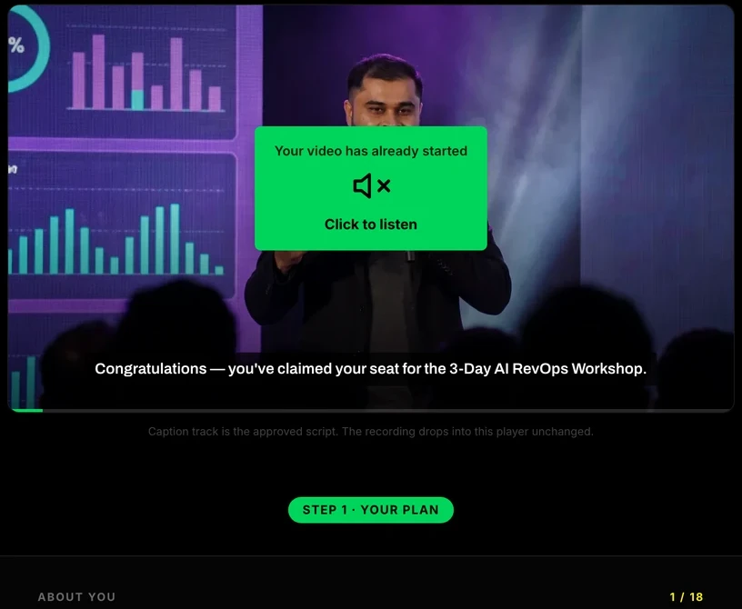
After the server writes, the browser lands on the next page, never a blank 'thanks'. The 3-Day AI RevOps Workshop · /workshop/success · Captured 24 Sept 2026 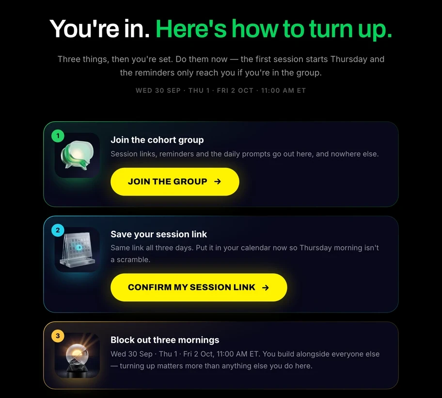
The thank-you page gives three jobs: join the group, save the link, block the time. The 3-Day AI RevOps Workshop · /workshop/join · Captured 24 Sept 2026 -
Send the Confirmation With the Calendar File
The Centre Does This
The funnel sends the confirmation email the moment someone registers, and the thank-you page carries the calendar file.
You Do This
Read one test confirmation to check the date, time and join link.
Building it by hand instead
Your event platform sends the confirmation the moment someone registers. In WebinarGeek:
- Open the webinar and click Edit webinar → Emails. Next to the confirmation email, click Edit.
- Check the date, time and join link are right.
- Scroll to Send test e-mail, enter your own address and click Send. Check the merge fields fill in. The view link in a test email opens a dummy page.
- Check the calendar invitation setting. It is not in the email editor: open the webinar's Registration settings and find Customize email calendar invitations. Keep the option that adds the invite to the recipient's calendar.
- In the email that arrives, check the calendar file is attached, in the registrant's time zone.
The invitation uses the duration from step 1, and its wording can't be edited.
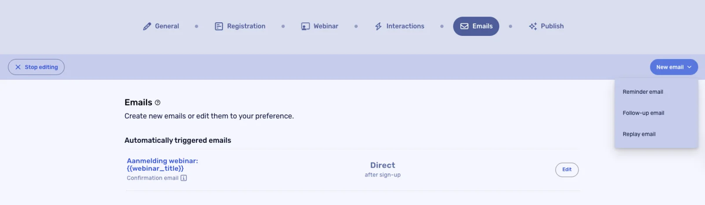
The confirmation email sits under Automatically triggered emails, with Edit beside it. WebinarGeek Help Centre · Creating emails · Captured 2 Oct 2026 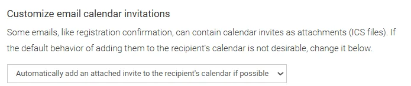
The calendar invitation is its own setting, with a menu for how the invite is added. WebinarGeek Help Centre · Confirmation email · Captured 2 Oct 2026 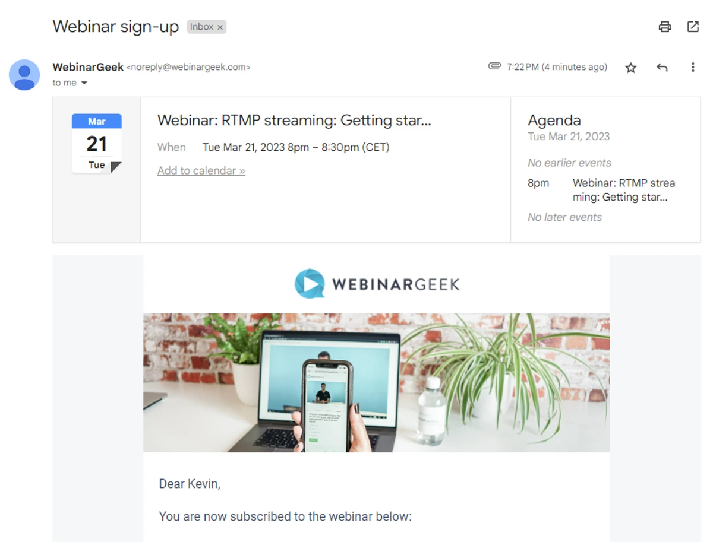
The platform's confirmation arrives with the calendar entry built in. WebinarGeek Help Centre · Confirmation email · Captured 24 Sept 2026 -
Carry the UTM All the Way to the CRM
The Centre Does This
The funnel saves
utm_source,utm_medium,utm_campaignandutm_contenton the contact at sign-up and the 5-minute CRM sync carries them across. The centre also builds your Google Analytics property, web stream and Measurement ID, puts the tag on every funnel page, and marksgenerate_leadandbook_callas key events.You Do This
Add the centre's email as an Editor on your Google Analytics account, on the Let the Agent Into Google Analytics card. That is your only step.
Building it by hand instead
The tag on the link that brought someone in has to reach their CRM record.
- Read
utm_source,utm_medium,utm_campaignandutm_contentfrom the page address and send them with the form. - Save them on the contact, along with
sourceandmechanism, in the custom fields from step 4. - Pass the same values to WebinarGeek with the registration (
subscription_utm_tag_attributes), so they show on the subscriber there too. - Add your analytics tag to every page, and mark the registration as a key event.
Set up Google Analytics once, for the registration page and the thank-you page:
- Go to analytics.google.com. In Admin, click Create → Property and fill in the name, time zone and currency.
- In Admin, open Data Streams, click Add stream → Web and enter your site address.
- Open the stream and copy the Measurement ID (it starts with
G-). - Have Claude Code add the Google tag with that ID to both pages, right after
<head>, and send a registration event (for examplegenerate_lead) when the thank-you page loads. - Register once so the event exists. Then open Admin → Data display → Events and click the star next to it to mark it as a key event.
Data can take 30 minutes to start, and a new key event up to 24 hours to show in reports.
- Read
-
Hand Every Registrant to the CRM the Same Way
The Centre Does This
The centre creates the tags, seven custom fields and an 11-stage pipeline in GoHighLevel (or the HubSpot or Zoho equivalent), then the funnel syncs every 5 minutes. It maps registered to
webinar registrant, attended towebinar attended, no-show tolive webinar not watched, replay watched towatched webinar replay, and moves the pipeline stage itself.You Do This
Give the centre your GoHighLevel token and location ID (or your HubSpot or Zoho access).
Building it by hand instead
Every new registrant carries the same fields and the tag
webinar registrant. Name the tags once and never rename them:webinar registrant,webinar attended,live webinar not watched,purchased, pluswatched webinar replay. Everything in Stage 3 keys off them.These are also exactly the tags the supplied WebinarGeek-to-CRM sync writes, so nothing needs mapping. On top of them the sync adds
live webinar watchedfor a live viewer andwebinar unsubscribedfor an opt-out.When you import a list into the CRM:
- Open Contacts and click Import Contacts. Upload the CSV.
- On the Map step, match each column to the field with the same name.
- Keep Don't update to an empty value ticked on every column, so a blank cell can't wipe a value that is already there.
- A filled cell still replaces the old value. Leave a column unmapped if the import must never change that field.
- On the last step, add the tag for the imported contacts.
Existing contacts are matched by contact ID, then email, then phone. A thin registration record must never replace richer data.
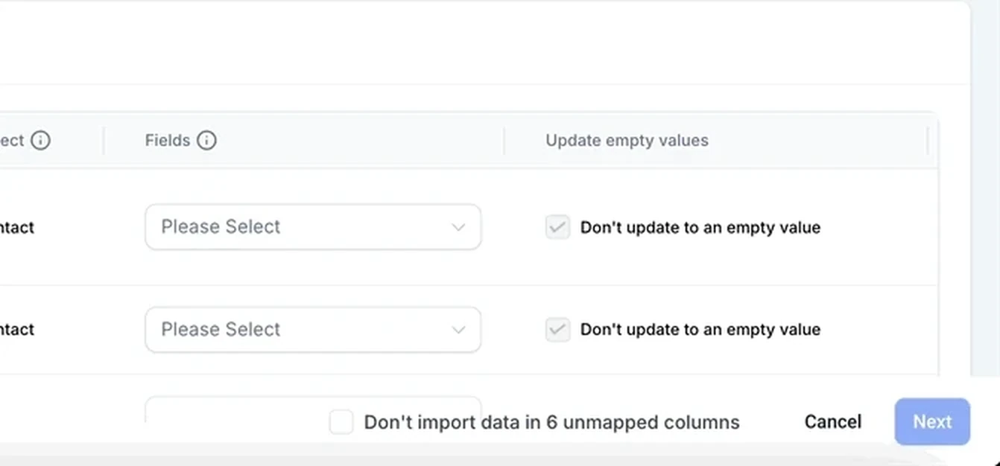
Map every column by name, and never let an empty value overwrite what's already there. HighLevel Help Centre · Importing contacts using a CSV file · Captured 24 Sept 2026 -
Catch Social Lead Forms Too
People who register through a social event page or lead form must land in the same place. On LinkedIn, a small Cloudflare Worker that Claude Code builds for you does the catching: every new lead-form answer becomes a row in a Google Sheet within seconds.
What the Worker does with each answer:
- Receives it the moment it's submitted. LinkedIn pushes each new lead-form submission to the Worker's address, so nothing polls on a schedule and nothing is missed between runs. This needs a LinkedIn developer app with access to LinkedIn's lead sync for the ad account that owns your forms.
- Writes one row to the tab
LinkedIn Lead Gen Form Submissions, in this column order: First Name, Last Name, Email Address, LinkedIn URL, Job Title, Company Name, Campaign Name, Account Name, Form Name, Full Response. The last column keeps the complete answer set, so a question you add later is never lost.
Set it up:
- In Google Sheets, add a tab named
LinkedIn Lead Gen Form Submissionsand type those ten headers into row 1, in that order. - In Claude Code, ask for a Cloudflare Worker that receives LinkedIn lead-form submissions and appends each one to that tab, in that column order. Give it the sheet and your Cloudflare Workers token; keep every key in the Worker's secrets, never in its code.
- Register the Worker's address as the lead-form webhook in your LinkedIn developer app, for the forms you want to watch.
- Submit a test answer on one of your forms and check the row appears within seconds.
-
Register Lead-Form Rows in the Same Worker
Filling the sheet is half the job. The same Worker finishes it: each new row is registered on WebinarGeek, so a lead-form registrant gets the same personal join link as someone who used your page. Nothing else needs to run.
The two calls it makes after writing the row:
- Upcoming broadcast. Asks your registration backend which session is next: a GET to
/api/v1/broadcast/upcoming-broadcastwith yourclientId. The answer carries thebroadcast_id. - Add the subscriber. Sends a POST to WebinarGeek at
/api/v2/broadcasts/{broadcast_id}/subscriptionswith the email and first name from the answer. WebinarGeek registers the person and sends its own confirmation email with their personal join link.
Set it up:
- Ask Claude Code to add those two calls to the Worker, after the sheet row is written.
- Store your WebinarGeek API token as a Worker secret named
WEBINARGEEK_TOKEN, sent as theApi-Tokenheader. Never type the token into the code: anything in the code ends up in every copy of it. - Submit one more test answer and check the person appears in the WebinarGeek broadcast and receives the confirmation email.
- Upcoming broadcast. Asks your registration backend which session is next: a GET to
-
Check the Live Page Every Cycle
The Centre Does This
The centre probes the live page when it deploys it, and the
test-runjob walks two synthetic test contacts through the funnel and reports pass or fail per automation.You Do This
Open the page once yourself and look at the date and the preview in a chat app.
Building it by hand instead
Before you send any traffic, open the live page:
- The date is this event's date.
- A test registration reaches the event platform and the CRM.
- View Source: no keys or private tokens anywhere in the page.
- Paste the link into a chat app. Link previews don't run scripts, so if the date is added by script, the preview shows the old one.
- Check it at 375px, 768px and 1280px.
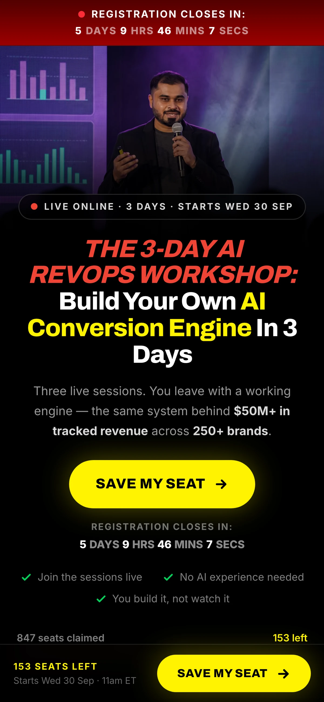
Check the page at phone width: headline, date and button all visible without zooming. The 3-Day AI RevOps Workshop · /workshop, 390px · Captured 24 Sept 2026 -
Register From Your Phone and Follow It Through
The Centre Does This
The
test-runjob already registers two synthetic contacts and checks each automation, so you are confirming the experience, not the plumbing.You Do This
Make one real registration from your phone.
Building it by hand instead
The proof the funnel works is one real registration, made from a phone:
- Register with a test address from a tagged link.
- Check the thank-you page loaded and the calendar button works.
- Check the person is in your event platform and your CRM, with the UTM on the record. In WebinarGeek, open the webinar, then Statistics → Registrations, open the three dots next to the test registrant and click Show details. In GoHighLevel, open the contact and check the custom fields.
- Check the confirmation email arrived with the calendar file.
If any of the four fails, the funnel isn't live yet.
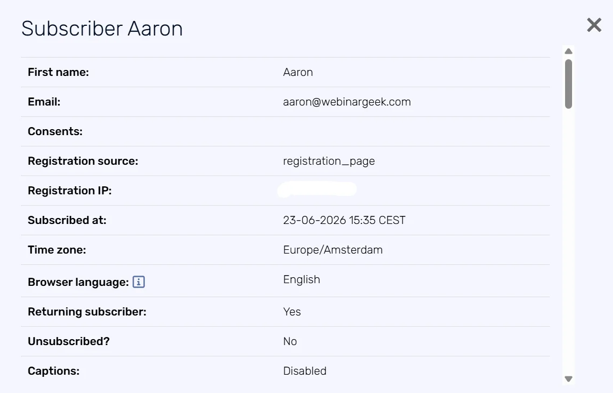
Show details lists what the platform saved for one registrant, including the registration source and time zone. WebinarGeek Help Centre · Registration data · Captured 2 Oct 2026 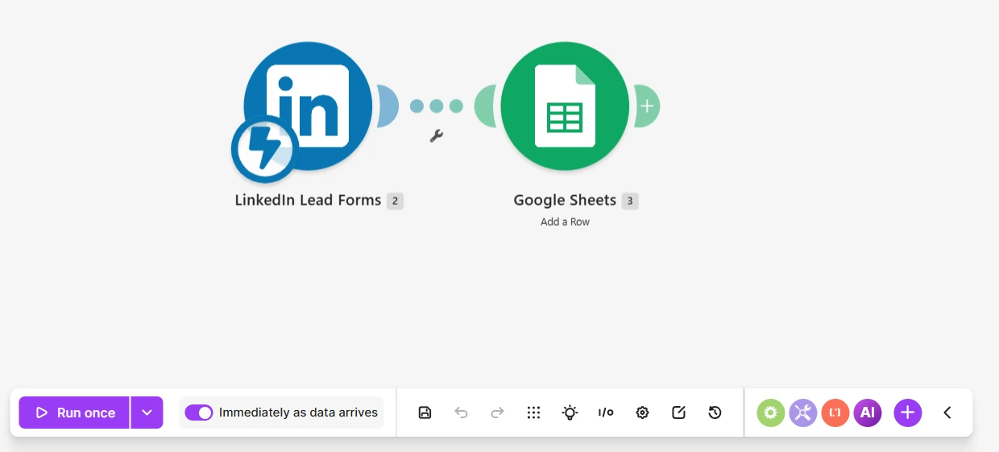
Straight after a test sign-up: the dates and the calendar button, all on one phone screen. Our local build · /workshop/join, tracking off · Captured 10 Oct 2026
How the Deployed Funnel Handles a Registration (Paste Only if You Build by Hand)
Build a small server endpoint for my registration form. On each submission: validate first name, last name, business email (and phone only if present) on the server; register the person for my event (broadcast ID: [id]) in my event platform; create or update the contact in my CRM with source, utm_source, utm_medium, utm_campaign, utm_content, mechanism, the webinar fields readable_webinar_date, readable_webinar_time, watch_link_webinargeek (the per-person join link) and webinar_broadcast_date, and the tag 'webinar registrant', never overwriting a field that already has a value; add a calendar hold; append a row to my registration log sheet; then redirect to [thank-you URL]. If the email is already registered, skip the writes and still redirect. Keep all keys in environment variables, never in the page. Show me a test run with two submissions, one new and one duplicate.
Examples From the Template Library
Branded Landing Page (13 Sections) · Short Landing Page (One Screen of Promise, Four Proof Cards) · Registration Form · Confirmation Email (T+0 on Registration)
Build specs (no real example yet): Event-Platform Registration Page Description · Thank-You / Registered Page · Calendar-Hold Email · Exit-Intent Popup · Registration Automations Map · CRM Hand-Off Fields and Tags · Live Landing Page Check
What Good Looks Like
- Every block answers one objection or earns the action. If a block does neither, take it out.
- Proof points are numbers, not adjectives. Borrowed proof stays labelled as borrowed.
- Ask only for fields you will use. Every extra field costs completions.
- The thank-you page confirms, adds to calendar, invites them to your group and says exactly what arrives next.
- Headline A, benefit-led
- The outcome your buyer wants, in their words, with a number only if you have a real one.
- Headline B, problem-led
- Open with the objection that kills deals, as your buyer says it. Same offer as A; only the angle changes.
- Subhead
- Your method in one line: how the promise in the headline actually happens.
- Proof points, one per line: numbers, not adjectives. Only your own proof, or labelled borrowed
- Write each point as a number with its context. Leave it empty rather than invent one.
- FAQ: each objection answered, as "Q: …" then "A: …" lines
- Use your Day 1 objection list. Each answer should remove one reason to wait, not repeat the headline.
- Thank-you page: confirm, then what arrives next
- Say what arrives next and when, so they know to look for it. The page adds its own calendar button.
- Thank-you page: your community group link (shows a join link). Leave it empty and nothing shows
- Shows a join link on the thank-you page that opens your group. A group gives sign-ups somewhere to go while they wait. Empty means no link shows.
- Thank-you page: the join link's text
- The words of that join link. Name the group, like Join the Members Group. Empty means the link reads Join the community group.
- Thank-you page: the one next step, shown under the join link
- One line under the join link that tells them the single thing to do now. Empty means the line does not show.
- Ask for their LinkedIn profile?
- Say yes only if you will follow up personally on LinkedIn. Every field costs sign-ups.
The Nine Blocks, in Order
Logo and trust strip. Headline and subhead. A 60 to 90 second muted, captioned video. Three proof points. The registration form, above the fold on a 1366 by 768 laptop. Your method in 3 to 5 steps. Testimonials, each answering one objection. An FAQ that is your objection list. A button that follows the reader down the page.
app/src/content/guides/s2-landing/s2-tantra-pro-funnel.ts
Common Mistakes
- Testing a second, thinner page instead of a second headline.
- Adding navigation links that lead visitors off the page.
- A thank-you page that only says thanks, at the moment they are most willing to act.